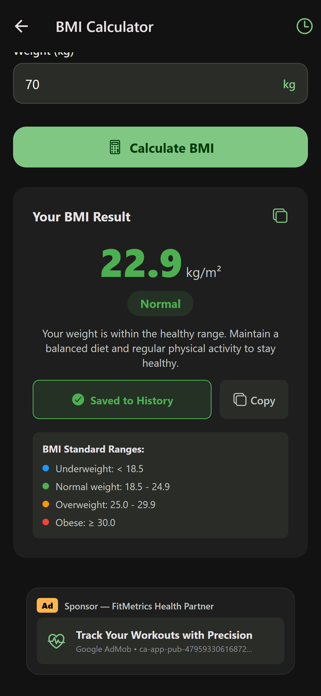

FitMetrics
Ultimate Health & Workout Tracker
Know Your
BMI Score
Color-coded health ranges
instantly on your phone.
Daily Burn
Calorie Target
Accurate BMR formulas
with 5 activity levels.
Navy Method
Body Fat %
Calculate fat & lean mass
with precision.



🛡️
100% Offline & Private
Available Now on Google Play Store